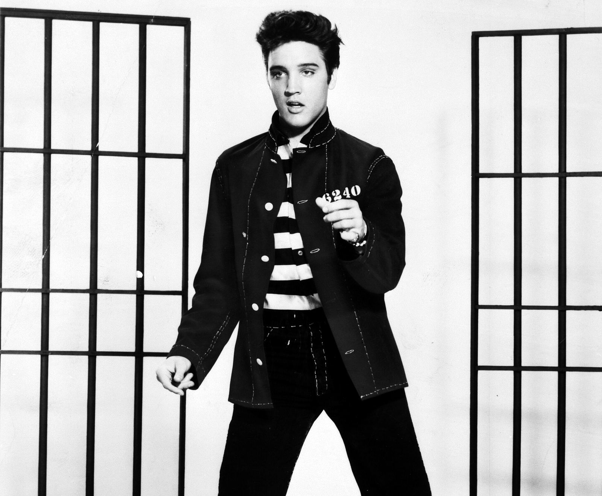

猫王版权方起诉 Anthropic：指 Claude 未经许可用 274 首歌词训练并生成侵权改编，索赔 4110 万美元


据 NBC News 2026 年 10 月 25 日报道，管理猫王埃尔维斯·普雷斯利知识产权的 Authentic Brands Group 联合其他持有其音乐权利的公司、信托与个人，于上周五起诉 Anthropic，指其未经许可、未付费使用 274 首歌曲的歌词训练 Claude 模型，并生成侵权版本。涉及曲目包括《All Shook Up》《Can’t Help Falling in Love》《Don’t Be Cruel》等。
原告按每件故意侵权作品最高 15 万美元计，索赔 4110 万美元法定赔偿
诉状称侵权贯穿 Claude 旗舰模型的「整个开发过程」并延续至今，用户仍能让模型复现歌词或生成未经授权的改编；原告称在被要求「为现代听众」重写特定歌曲时，Claude 的产出结构、副歌与原作非常接近。原告按每件故意侵权作品最高 15 万美元计，索赔 4110 万美元法定赔偿，并要求永久禁令及销毁未经授权的副本。
Anthropic 发言人回应：「我们不同意这些指控，并打算全力应诉。」NBC 提到，环球音乐、Concord、ABKCO 等出版商此前已就歌词起诉 Anthropic，BMG、Sony Music Publishing 与 Warner Chappell 今年也提起了类似诉讼；DailyAI 指出这是 Anthropic 一周内第二起音乐诉讼。
来源
摘记，不是官方媒体。诉状内容为原告单方指控，尚未经法院认定；Anthropic 否认相关指控。